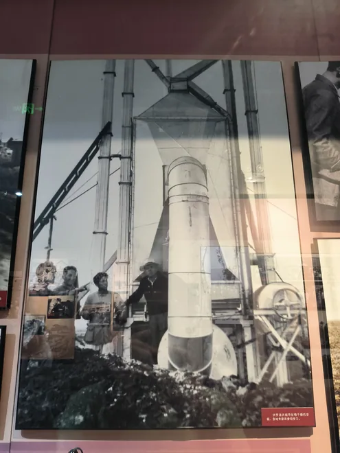

友谊博物馆展出的这些老照片，记录了专家、农机与垦荒者的日常。
历史照片里既有中苏专家和翻译合影，也有苏联专家家属、孩子在友谊生活的记录。

苏联专家伏罗洛夫参与指导安装谷物干燥机，各地也派人到友谊学习操作。
援助卡车装在铁路平车上运抵福利屯。同组照片还有田间拖拉机和成列农机。
刘瑛在开荒动员大会发言。另一张照片记录了童延兰和刘瑛交流联合收割机驾驶技术的情景。
上图是老队长和支边青年围桌定垦荒计划，下图是在马架子里办起来的文化室。